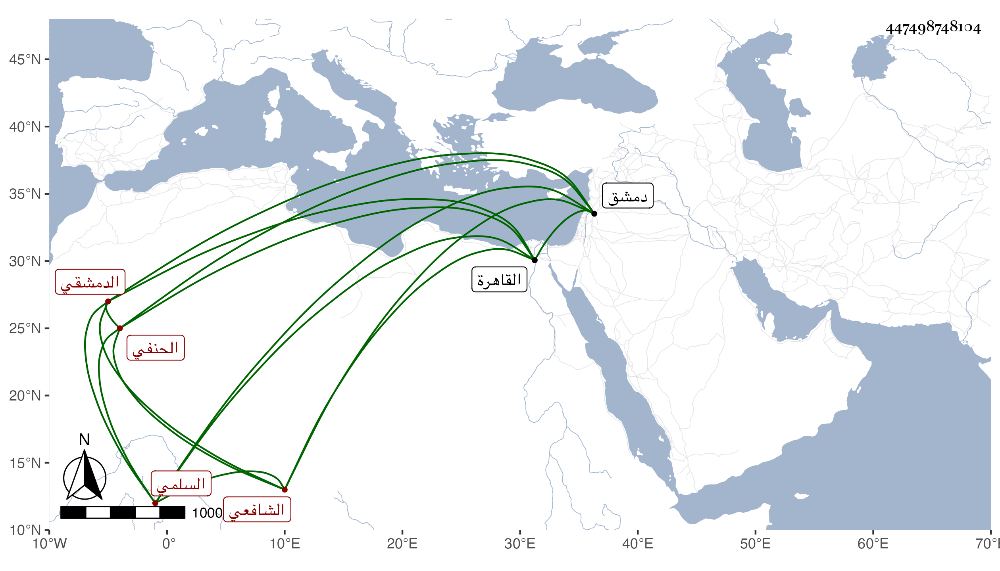

0902Sakhawi.DawLamic.ITO20230111-ara1.EIS1600.447498748104
Biography ID: 447498748104
553
محمد بن علي بن محمد بن محمود بن علي بن عبد الله بن منصور الشمس السلمي الدمشقي الحنفي ثم الشافعي ويعرف بابن خطيب زرع لكون جد والده كان خطيبها ثم تداولها ذريته . ولد في ذي الحجة سنة أربع وسبعين وسبعمائة ونشأ حنفيا ثم تحول شافعيا . وناب في قضاء بلده ثم تولع بالأدب فنظم الشعر وباشر التوقيع عند الأمراء واتصل بابن غراب حين مجيئه لدمشق ومدحه ورافقه إلى القاهرة واستخدمه في ديوان الإنشاء وكذا صحب بعض الأمراء وحصل وظائف ثم ترقت حاله بعد موت ابن غراب . قال شيخنا في إنبائه وكان عريض الدعوى جدا . مات في ذي القعدة سنة إحدى عشرة وهو القائل :
| وأشقر في وجهه غرة | كأنها في نورها فجر |
| بل زهرة الأفق لأني أرى | من فوقها قد طلع البدر |
وله فيما اقترح عليه مما يقرأ مدحا فإذا صحف كان هجوا :
| التاج بالحق فوق الرأس نرفعه | إذ كان فردا حوى وصفا مجالسه |
| فضلا وبذلا وصنعا فاخرا | فأسأل الله يبقيه ويحرسه |
وذكره في معجمه باختصار فقال : تعلق بأذيال الأدب وقال الشعر المقبول وكان فيه عجب شديد ودعوى عريضة ، وصحب أخيرا سعد الدين بن غراب وخدم في ديوان الإنشاء ، رأيته مرارا وسمعت من نظمه ومدح فتح الله بقصيدة نونية لا بأس بها . وذكره ابن خطيب الناصرية أيضا والمقريزي في عقوده .
